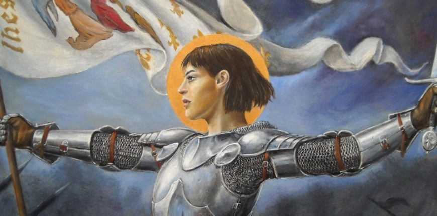
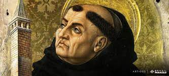
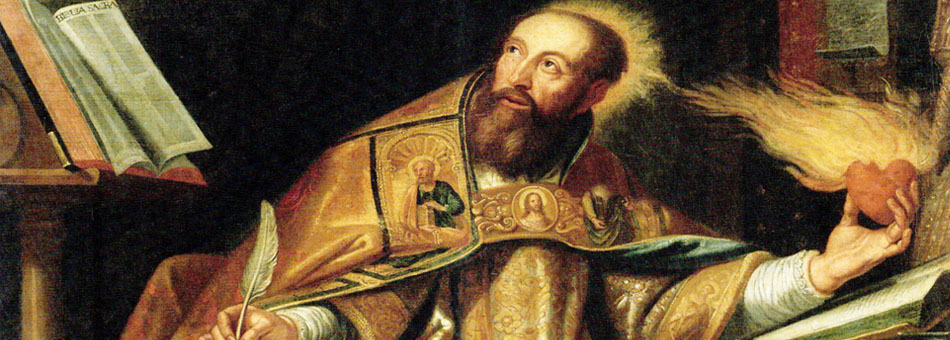

Joana D'Ark
Joana D’arc nasceu na França no ano de 1412 e morreu em 1431 (época medieval). Foi uma importante personagem da história francesa, durante a Guerra dos Cem Anos (1337-1453), quando seu país enfrentou a rival Inglaterra. Joana D’arc foi canonizada (transformada em santa) no ano de 1920. A história da vida desta heroína francesa é marcada por fatos trágicos. Quando era criança, presenciou o assassinato de membros de sua família por soldados ingleses que invadiram a vila em que morava. Com 13 anos de idade, começou a ter visões e receber mensagens, que ela dizia ser dos santos Miguel, Catarina e Margarida. Nestas mensagens, ela era orientada a entrar para o exército francês e ajudar seu reino na guerra contra a Inglaterra. Motivada pelas mensagens, cortou o cabelo bem curto, vestiu-se de homem e começou a fazer treinamentos militares. Foi aceita no exército francês, chegando a comandar tropas. Suas vitórias importantes e o reconhecimento que ganhou do rei Carlos VII despertaram a inveja em outros líderes militares da França. Estes começaram a conspirar e diminuíram o apoio de Joana D’arc. Em 1430, durante uma batalha em Paris, foi ferida e capturada pelos borgonheses que a venderam para os ingleses. Foi acusada de praticar feitiçaria, em função de suas visões, e condenada a morte na fogueira. Foi queimada viva na cidade de Rouen, no ano de 1431.
São Tomás de Aquino
Tomás de Aquino nasceu em 1225, em Aquino, uma comuna italiana, no Castelo de Roccasecca. Filho do Conde Landulf de Aquino, recebeu uma excelente educação. Estudou na abadia de Roccasecca, no Mosteiro da Ordem de São Bento de Cassino. Mais tarde, ingressou na Universidade de Nápoles, na Cátedra “Artes Liberais”. Com apenas 19 anos, em 1244, abandona o curso e decide seguir sua vocação religiosa tornando-se dominicano, ao ingressar na Ordem dos Dominicanos, no convento Saint Jacques, em Paris. Permaneceu alguns anos em Paris, cidade importante para seu desenvolvimento espiritual, intelectual e profissional. Entretanto, foi na cidade de Colônia, na Alemanha, que Aquino escreve suas primeiras obras, sendo discípulo do bispo, filósofo e teólogo alemão Santo Alberto Magno (1206 d.C-1280 d.C.), conhecido como Alberto, o grande. Mais tarde, em 1252, Tomás de Aquino retorna a Paris onde se gradua em Teologia e segue a carreira de professor. Ministrou aulas em Roma, Nápoles e outras cidades da Itália. Ficou conhecido como Doutor Angélico, cujo trabalho de vida esteve dedicado a fé, a esperança e a caridade constituindo assim, um pregador cristão da razão e da prudência. Foi um dos defensores da Escolástica, método dialético que pretendia unir a fé a razão em prol do crescimento humano. Uma de suas maiores obras, Summa Theologica, é o maior exemplo da Escolástica, na qual apresenta relações entre a ciência, razão, filosofia, fé e teologia. São Tomás Faleceu na cidade de Fossanova, Itália, no dia 7 de março de 1274, com 49 anos.
Santo Agostinho
Aurelius Augustinus (Aurélio Agostinho), mais conhecido como Santo Agostinho de Hipona, foi o patrono da ordem religiosa agostiniana e um dos responsáveis pela concepção do pensamento cristão medieval e da filosofia patrística. Foi também bispo, escritor, teólogo, filósofo, além, de ter testemunhado acontecimentos históricos de primeira ordem, tal como o fim da antiguidade clássica e a invasão de Roma pelos visigodos. Agostinho é considerado "Santo" tanto pela Igreja Católica quanto pela Anglicana e, mesmo para os protestantes e evangélicos, é referência na história eclesiástica com seus escritos e ditos. Portanto, foi canonizado e transformado em 'Doutor da Igreja', um título honorífico e extremamente raro, concebido pela Igreja Católica (apenas 35 Doutores). Suas obras são reeditadas até os dias atuais, das quais se destacam Confissões (Confessiones, 397), sua autobiografia; Da Trindade (De Trinitate, 400-416, 15 volumes), onde se dedica ao relato da divindade nas pessoas; e, Da cidade de Deus (De Civitate Dei, 413-426), sua obra mais conhecida, onde explica a cidade terrestre como uma imitação da cidade celeste.